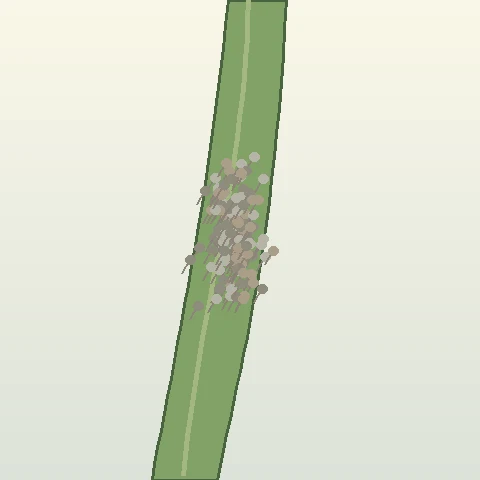

灰色霉
茎上出现灰褐色霉层
这是与该表现相符的一种可能原因，请结合下方特征核对。

先看哪里
检查霉层是否从伤口、凋谢花或坏死组织附近开始，观察茎是否仍坚实。
可能原因与下一步
灰霉等问题容易出现在湿润环境。清理枯花枯叶，减少叶面水滴和枝条拥挤。
茎上出现灰褐色霉层
这是与该表现相符的一种可能原因，请结合下方特征核对。

检查霉层是否从伤口、凋谢花或坏死组织附近开始，观察茎是否仍坚实。
灰霉等问题容易出现在湿润环境。清理枯花枯叶，减少叶面水滴和枝条拥挤。